Version Alpha (Sep 2008)
Yang Wang and
Stephen Boyd
fast_mpc contains two C functions, with MATLAB mex interface, that implement the fast model predictive control methods described in the paper Fast Model Predictive Control Using Online Optimization. See this paper for the precise problem formulation and meanings of the algorithm parameters.
Get and unpack the package files from either of
This will create a directory that contains all source, as well as this documentation.
See the file INSTALL for installation instructions.
We consider the control of a time-invariant linear dynamical system
where 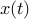, 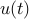, and 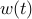 are the state, input, and disturbance at time , and and 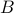 are the dynamics and input matrices.
In model predictive control (MPC), at each time we solve the QP
with variables
and data
The MPC input is 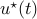. We repeat this at the next time step.
fast_mpc is a software package for solving this optimization problem fast by exploiting its special structure, and by solving the problem approximately. The function fmpc_step solves the problem above, starting from a given initial state and input trajectory. The function fmpc_sim carries out a full MPC simulation of a dynamical system with MPC control.
The function fmpc_step solves the above optimization problem and returns the approximately optimal 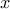 and 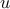 trajectories. (In this case, you must implement the MPC control loop yourself.) The calling procedure is as follows.
[X,U,telapsed] = fmpc_step(sys,params,X0,U0,x0);
System description (sys structure):
sys.A : dynamics matrix A
sys.B : input matrix B
sys.Q : state cost matrix Q
sys.R : input cost matrix R
sys.xmax : state upper limits x_{max}
sys.xmin : state lower limits x_{min}
sys.umax : input upper limits u_{max}
sys.umin : input lower limits u_{min}
sys.n : number of states
sys.m : number of inputs
MPC parameters (params structure):
params.T : MPC horizon T
params.Qf : MPC final cost Q_f
params.kappa : Barrier parameter
params.niters : number of newton iterations
params.quiet : no output to display if true
Other inputs
X0 : warm start X trajectory (n by T matrix)
U0 : warm start U trajectory (m by T matrix)
x0 : initial state
The inputs X0 and U0 need not satisfy the constraints; they are first
projected into the bounding box before the fast algorithm is applied.
X : optimal X trajectory (n by T matrix) U : optimal U trajectory (m by T matrix) telapsed : time taken to solve the problem
The function fmpc_sim handles the entire MPC simulation. For 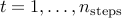, fmpc_sim solves the above optimization problem, then applies the MPC input and updates the state according to the dynamics equations. The state and control trajectories are initialized with those from the previous step, shifted in time, and appending 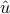 and 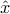, where
(As with fmpc_step, these trajectories are then projected into the constraint box.) Here 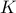 is the terminal control gain,
The calling procedure is
[Xhist,Uhist,telapsed] = fmpc_sim(sys,params,X0,U0,x0,w);
System description (sys structure):
sys.A : dynamics matrix A
sys.B : input matrix B
sys.Q : state cost matrix Q
sys.R : input cost matrix R
sys.xmax : state upper limits x_{max}
sys.xmin : state lower limits x_{min}
sys.umax : input upper limits u_{max}
sys.umin : input lower limits u_{min}
sys.n : number of states
sys.m : number of inputs
MPC parameters (params structure):
params.T : MPC horizon T
params.Qf : MPC final cost Q_f
params.kappa : Barrier parameter
params.niters : number of newton iterations
params.quiet : no output to display if true
params.nsteps : number of steps to run the MPC simulation
Other inputs
X0 : warm start X trajectory (n by T matrix)
U0 : warm start U trajectory (m by T matrix)
x0 : initial state
w : disturbance trajectory (n by nsteps matrix)
The inputs X0 and U0 need not satisfy the constraints; they are first
projected into the bounding box before the fast algorithm is applied.
Xhist : state history (n by nsteps matrix) Uhist : input history (m by nsteps matrix) telapsed : time taken to solve the problem
We have provided two examples that illustrate usage:
masses_example.m uses fmpc_step to control a system of oscillating masses.
randsys_example.m uses fmpc_sim to simulate MPC on a randomly generated system.
Please report any bugs to Yang Wang <yw224@stanford.edu>.
fast_mpc is under Apache license, version 2.0, January 2004.